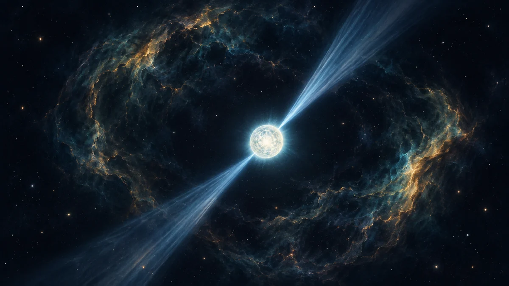

중성자별은 왜 도시만 한 크기에 별의 질량을 담을까요?
무거운 별의 중심핵이 초신성 뒤에 극도로 압축되는 과정을 따라가며, 중성자별이 작지만 무거운 까닭과 펄서의 깜빡임을 알아봅니다.

폭발 뒤에도 중심핵은 남아요
태양보다 훨씬 무거운 별이 연료를 다 쓰면 중심을 떠받치던 압력이 약해집니다. 바깥층은 초신성 폭발로 날아가지만, 중심핵은 자기 중력을 이기지 못하고 안쪽으로 무너집니다. 그렇다면 별 하나가 통째로 사라진 자리에 어떻게 작은 중성자별이 남을까요?
남는 천체는 원래 별의 질량에 따라 달라집니다. NASA는 대략 태양 질량의 7~19배로 태어난 별이 중성자별을 남길 수 있다고 설명합니다. 더 무거운 별은 블랙홀로 이어질 수 있지만, 경계는 별의 진화와 질량 손실에 따라 달라지므로 단순한 한 숫자로 모든 별을 나눌 수는 없습니다.[1] [2]
중력이 물질을 도시 크기로 눌러요
무너지는 중심핵에서는 압력이 원자를 유지하던 구조를 망가뜨립니다. 양성자와 전자가 결합해 대부분 중성자로 바뀌고, 새로 만들어진 중성자와 핵물질의 성질이 더 이상의 붕괴를 버티는 단계가 생깁니다. 그래서 태양과 비슷하거나 더 큰 질량이 지름 약 20킬로미터인 도시 규모의 구 안에 모일 수 있습니다.
밀도는 질량을 부피로 나눈 값입니다. 비슷한 질량을 훨씬 작은 공간에 넣으면 밀도가 급격히 커집니다. NASA는 중성자별 물질을 각설탕만큼 떼어 지구에 놓는다는 비유에서 약 1조 킬로그램에 이를 것이라고 설명합니다. 실제로 떠낼 수 있다는 뜻이 아니라, 압축 정도를 상상하기 위한 비유예요.[1] [2] [3]
안쪽은 아직 풀리지 않은 문제예요
‘중성자별’이라는 이름 때문에 내부 전체가 중성자만으로 채워졌다고 생각하기 쉽습니다. 그러나 NASA의 NICER 설명은 바깥핵에 양성자·중성자·전자가 있고, 안쪽핵에서는 중성자가 더 작은 구성 요소인 쿼크 상태로 바뀌는지 등 여러 모형이 경쟁한다고 소개합니다. 정확한 내부 상태는 아직 확정되지 않았습니다.
국제우주정거장의 X선 망원경 NICER는 중성자별의 질량과 반지름을 재어 물질이 얼마나 잘 압축되는지 살핍니다. 같은 질량이라도 반지름이 다르면 내부 물질의 성질을 가려내는 단서가 되기 때문입니다. 작은 천체의 크기를 재는 일이 곧 극한 물질을 연구하는 실험인 셈입니다.[2]
깜빡임은 별이 꺼지는 신호가 아니에요
일부 중성자별은 빠르게 돌며 자기극 부근에서 빛의 다발을 냅니다. 그 다발이 등대 불빛처럼 지구 방향을 쓸고 지나갈 때 규칙적인 펄스로 보여 ‘펄서’라고 부릅니다. 별 자체가 매번 켜졌다 꺼지는 것이 아니라 회전하는 빛의 방향을 보는 현상입니다.
ORBIT 우주 뉴스에서 펄서나 NICER 관측 소식을 만나면 질량과 반지름이 함께 제시됐는지 살펴보세요. 단순히 작다는 표현만으로는 내부가 얼마나 빽빽한지 판단하기 어렵습니다. 기억할 한 가지는, 중성자별이 작은 이유가 가벼워서가 아니라 초신성 뒤 중심핵이 중력으로 극도로 압축됐기 때문이라는 사실입니다.[1] [2]
이 이야기를 확인한 자료
- NASA Science · Neutron Stars Are Weird! ↗자료 확인 2026.10.07 · 원문 새 탭
- NASA Science · What's Inside a ‘Dead' Star? ↗자료 확인 2026.10.07 · 원문 새 탭
- NASA GSFC · Imagine the Universe! — Neutron Stars ↗자료 확인 2026.10.07 · 원문 새 탭
자료의 날짜와 적용 범위를 함께 확인해주세요. 오류 제보하기 →